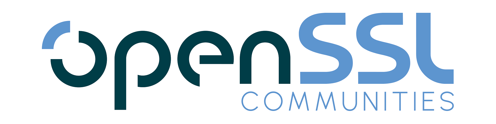

Academics Representative in OpenSSL Advisory Committees
I’m honored to serve as the elected representative for the Academics
Community in the OpenSSL Foundation's Technical Advisory Committee (TAC).
This role gives me the opportunity—and the responsibility—to bring
forward the perspectives, concerns, and contributions of the academic
community as OpenSSL evolves.
🔍 Whether you’re researching cryptographic primitives, building
prototypes using OpenSSL, exploring real-world TLS deployments,
studying secure systems, or contributing perspectives from entirely
different academic domains, your voice matters—your insights can help
shape both the technical direction and broader strategic priorities of
OpenSSL.
The OpenSSL community platform seeks to engage all
academics—including those far removed from technical
fields—recognizing that meaningful contributions come from
diverse disciplines and ways of thinking.
If you’re part of the academic world—whether as faculty, student, or
researcher—please feel free to raise any ideas, questions, or concerns
on
OpenSSL Communities.
{kind=link}